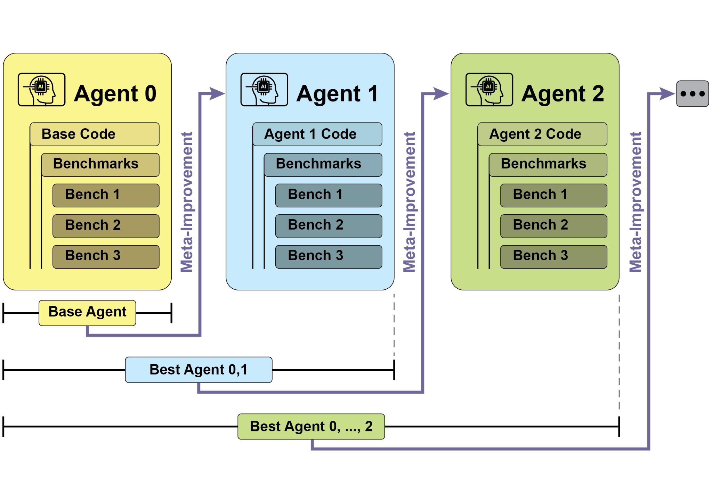
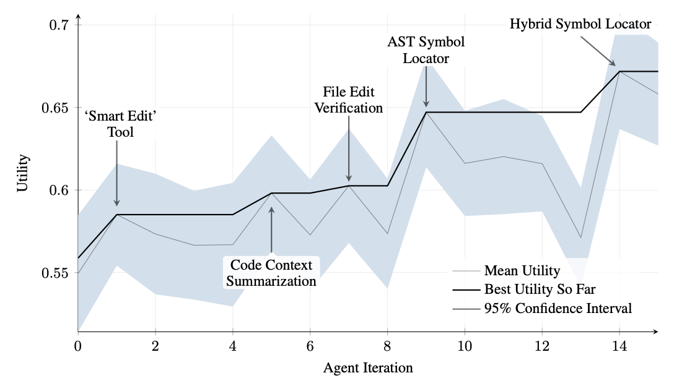
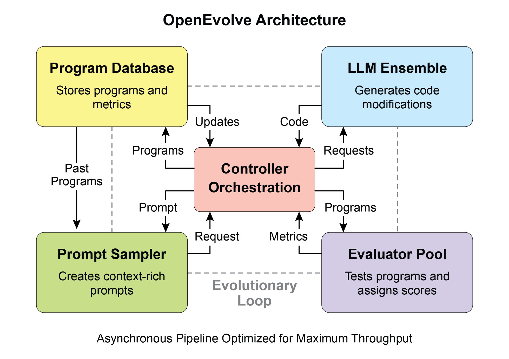
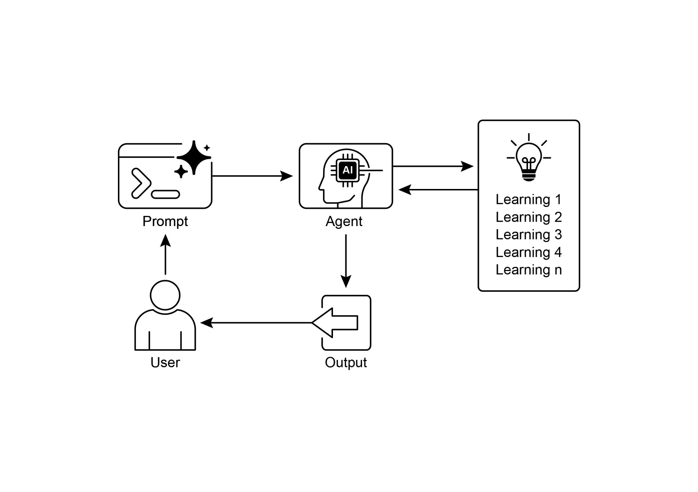

读书 · Agentic Design Patterns · 中英对照
第 9 章 · 学习与适应 Learning and Adaptation
Chapter 9: Learning and Adaptation · 《Agentic Design Patterns》 · Antonio Gulli · 2025
讲智能体如何通过经验与数据自主学习、持续适应动态环境。
← 返回导读 原书 PDF 上一章:第8章 下一章:第10章
本章要点
① 学习方式涵盖强化、监督、无监督、少样本及在线学习等 ① PPO用裁剪机制稳定策略更新，DPO直接优化人类偏好 ① SICA通过修改自身代码迭代自我改进，并配子智能体与监督者 ① AlphaEvolve与OpenEvolve用LLM加进化算法自动发现优化算法
本章一图流
学习方式强化监督无监督少样本在线→策略优化PPO裁剪稳定，DPO直优偏好→自我改进SICA改代码迭代，配子体监督→进化发现LLM+进化算法自动寻优→持续适应经验数据驱动动态环境适应
智能体从多样学习到策略优化，再经自我改进与进化发现，最终实现持续适应。
原书插图




本章划线句
划线句(逐字校验)
"Agents learn and adapt by changing their thinking, actions, or knowledge based on new experiences and data."
为什么值得划线:点明学习与适应的本质：依据经验改变自身。
划线句(逐字校验)
"In short, PPO balances improving performance with staying close to a known, working strategy, which prevents catastrophic failures during training and leads to more stable learning."
为什么值得划线:一句话概括PPO裁剪机制的核心价值。
划线句(逐字校验)
"SICA acts as both the modifier and the modified entity, iteratively refining its code base to improve performance across various coding challenges."
为什么值得划线:揭示自我改进智能体的关键特征。
正文(英中对照)
第9章：学习与适应（Learning and Adaptation） Chapter 9: Learning and Adaptation
"Learning and adaptation are pivotal for enhancing the capabilities of artificial intelligence agents. These processes enable agents to evolve beyond predefined parameters, allowing them to improve autonomously through experience and environmental interaction. By learning and adapting, agents can effectively manage novel situations and optimize their performance without constant manual intervention. This chapter explores the principles and mechanisms underpinning agent learning and adaptation in detail. The big picture Agents learn and adapt by changing their thinking, actions, or knowledge based on new experiences and data."
学习和适应对于增强人工智能代理(agent)的能力至关重要。这些过程使代理能够超越预定义参数，通过经验和环境交互自主改进。通过学习和适应，代理可以有效应对新情况并优化其性能，而无需持续的人工干预。本章详细探讨支撑代理学习和适应的原理与机制。总体图景：代理通过基于新经验和数据改变其思维、行动或知识来学习和适应。
导读注:强调学习与适应是代理超越预设参数、自主进化的关键。
"This allows agents to evolve from simply following instructions to becoming smarter over time. ● Reinforcement Learning: Agents try actions and receive rewards for positive outcomes and penalties for negative ones, learning optimal behaviors in changing situations. Useful for agents controlling robots or playing games. ● Supervised Learning: Agents learn from labeled examples, connecting inputs to desired outputs, enabling tasks like decision-making and pattern recognition. Ideal for agents sorting emails or predicting trends. ● Unsupervised Learning: Agents discover hidden connections and patterns in unlabeled data, aiding in insights, organization, and creating a mental map of their environment."
这使得智能体（agent）能够从单纯遵循指令进化到随时间变得更智能。● 强化学习（Reinforcement Learning）：智能体尝试各种动作，对积极结果获得奖励、对消极结果受到惩罚，从而在不断变化的情境中学习最优行为。适用于控制机器人或玩游戏的智能体。● 监督学习（Supervised Learning）：智能体从带标签的示例中学习，将输入与期望输出关联起来，从而实现决策和模式识别等任务。非常适合对邮件进行分类或预测趋势的智能体。● 无监督学习（Unsupervised Learning）：智能体在无标签数据中发现隐藏的关联和模式，有助于获得洞察、进行组织，并构建对其环境的心理地图。
导读注:三种学习范式并列，强化学习靠奖惩试错，是智能体自主进化的关键。
"Useful for agents exploring data without specific guidance. ● Few-Shot/Zero-Shot Learning with LLM-Based Agents: Agents leveraging LLMs can quickly adapt to new tasks with minimal examples or clear instructions, enabling rapid responses to new commands or situations. ● Online Learning: Agents continuously update knowledge with new data, essential for real-time reactions and ongoing adaptation in dynamic environments. Critical for agents processing continuous data streams. ● Memory-Based Learning: Agents recall past experiences to adjust current actions in similar situations, enhancing context awareness and decision-making. Effective for agents with memory recall capabilities."
适用于在没有具体指导的情况下探索数据的智能体。● 基于 LLM 的智能体的少样本/零样本学习（Few-Shot/Zero-Shot Learning）：利用 LLM 的智能体能够以最少的示例或清晰的指令快速适应新任务，从而对新命令或新情况做出快速响应。● 在线学习（Online Learning）：智能体用新数据持续更新知识，这对于动态环境中的实时反应和持续适应至关重要。对于处理连续数据流的智能体尤为关键。● 基于记忆的学习（Memory-Based Learning）：智能体回忆过去的经验，以在类似情境中调整当前行动，增强上下文感知和决策能力。对于具备记忆回忆能力的智能体有效。
导读注:三类学习范式并列，在线学习被强调为处理连续数据流的关键。
"Agents adapt by changing strategy, understanding, or goals based on learning. This is vital for agents in unpredictable, changing, or new environments. 1 Proximal Policy Optimization (PPO) is a reinforcement learning algorithm used to train agents in environments with a continuous range of actions, like controlling a robot's joints or a character in a game. Its main goal is to reliably and stably improve an agent's decision-making strategy, known as its policy. The core idea behind PPO is to make small, careful updates to the agent's policy. It avoids drastic changes that could cause performance to collapse. Here's how it works: 1."
智能体(Agent)通过基于学习改变策略、理解或目标来适应环境。这对于处于不可预测、不断变化或全新环境中的智能体至关重要。1 近端策略优化(Proximal Policy Optimization, PPO)是一种强化学习算法,用于在具有连续动作范围的环境中训练智能体,例如控制机器人的关节或游戏中的角色。其主要目标是可靠且稳定地改进智能体的决策策略,即其策略(policy)。PPO 的核心思想是对智能体的策略进行小幅、谨慎的更新。它避免可能导致性能崩溃的剧烈变化。其工作原理如下:1.
导读注:点出智能体适应性的意义,并引出 PPO 小幅谨慎更新的核心思想。
"Collect Data: The agent interacts with its environment (e.g., plays a game) using its current policy and collects a batch of experiences (state, action, reward). 2. Evaluate a "Surrogate" Goal: PPO calculates how a potential policy update would change the expected reward. However, instead of just maximizing this reward, it uses a special "clipped" objective function. 3. The "Clipping" Mechanism: This is the key to PPO's stability. It creates a "trust region" or a safe zone around the current policy. The algorithm is prevented from making an update that is too different from the current strategy. This clipping acts like a safety brake, ensuring the agent doesn't take a huge, risky step that undoes its learning."
收集数据：智能体使用其当前策略与环境交互（例如玩游戏），并收集一批经验（状态、动作、奖励）。2. 评估一个“替代”目标：PPO 计算潜在的策略更新将如何改变预期奖励。然而，它并非仅仅最大化这一奖励，而是使用一个特殊的“裁剪”目标函数。3. “裁剪”机制：这是 PPO 稳定性的关键。它在当前策略周围创建一个“信任区域”或安全区。算法被阻止做出与当前策略差异过大的更新。这种裁剪就像一个安全刹车，确保智能体不会迈出巨大、冒险的一步，从而毁掉其学习成果。
导读注:PPO 稳定性的核心在于裁剪机制，它用“信任区域”限制策略更新幅度。
"In short, PPO balances improving performance with staying close to a known, working strategy, which prevents catastrophic failures during training and leads to more stable learning. Direct Preference Optimization (DPO) is a more recent method designed specifically for aligning Large Language Models (LLMs) with human preferences. It offers a simpler, more direct alternative to using PPO for this task. To understand DPO, it helps to first understand the traditional PPO-based alignment method: ● The PPO Approach (Two-Step Process): 1. Train a Reward Model: First, you collect human feedback data where people rate or compare different LLM responses (e.g., "Response A is better than Response B")."
简而言之，PPO 在提升性能与保持接近已知有效策略之间取得平衡，这能防止训练过程中的灾难性失败，并带来更稳定的学习。直接偏好优化（Direct Preference Optimization, DPO）是一种较新的方法，专门用于让大语言模型（Large Language Model, LLM）与人类偏好对齐。它为使用 PPO 完成此任务提供了一种更简单、更直接的替代方案。要理解 DPO，首先理解传统的基于 PPO 的对齐方法会有所帮助：● PPO 方法（两步流程）：1. 训练奖励模型：首先，收集人类反馈数据，让人们评分或比较不同的 LLM 回复（例如，“回复 A 比回复 B 更好”）。
导读注:点出 PPO 的稳定机制与 DPO 的定位，并引出两步流程的第一步。
"This data is used to train a separate AI model, called a reward model, whose job is to predict what score a human would give to any new response. 2. Fine-Tune with PPO: Next, the LLM is fine-tuned using PPO. The LLM's goal is to generate responses that get the highest possible score from 2 the reward model. The reward model acts as the "judge" in the training game. This two-step process can be complex and unstable. For instance, the LLM might find a loophole and learn to "hack" the reward model to get high scores for bad responses. ● The DPO Approach (Direct Process): DPO skips the reward model entirely."
这些数据用于训练一个单独的 AI 模型，称为奖励模型（reward model），其职责是预测人类会对任何新回复给出什么分数。2. 用 PPO 微调：接下来，使用 PPO 对 LLM 进行微调。LLM 的目标是生成能从奖励模型获得尽可能高分的回复。奖励模型在训练博弈中充当“裁判”。这个两步过程可能复杂且不稳定。例如，LLM 可能找到漏洞，学会“黑入”奖励模型，从而让糟糕的回复获得高分。● DPO 方法（直接过程）：DPO 完全跳过奖励模型。
导读注:对比 RLHF 两步法与 DPO 的核心差异：奖励模型可被“黑入”，DPO 直接绕开。
"Instead of translating human preferences into a reward score and then optimizing for that score, DPO uses the preference data directly to update the LLM's policy. ● It works by using a mathematical relationship that directly links preference data to the optimal policy. It essentially teaches the model: "Increase the probability of generating responses like the preferred one and decrease the probability of generating ones like the disfavored one." In essence, DPO simplifies alignment by directly optimizing the language model on human preference data. This avoids the complexity and potential instability of training and using a separate reward model, making the alignment process more efficient and robust."
DPO 不将人类偏好转化为奖励分数再针对该分数进行优化，而是直接使用偏好数据来更新 LLM 的策略。● 其工作原理是利用一种直接将偏好数据与最优策略联系起来的数学关系。它本质上是在教模型：“提高生成类似被偏好回复的概率，降低生成类似不被偏好回复的概率。” 实质上，DPO 通过直接基于人类偏好数据优化语言模型来简化对齐过程。这避免了训练和使用单独奖励模型的复杂性及潜在不稳定性，使对齐过程更高效、更稳健。
导读注:DPO 绕过奖励模型，直接用偏好数据优化策略，更高效稳健。
"Practical Applications & Use Cases Adaptive agents exhibit enhanced performance in variable environments through iterative updates driven by experiential data. ● Personalized assistant agents refine interaction protocols through longitudinal analysis of individual user behaviors, ensuring highly optimized response generation. ● Trading bot agents optimize decision-making algorithms by dynamically adjusting model parameters based on high-resolution, real-time market data, thereby maximizing financial returns and mitigating risk factors. ● Application agents optimize user interface and functionality through dynamic modification based on observed user behavior, resulting in increased user engagement and system intuitiveness. ● Robotic and autonomous vehicle agents enhance navigation and response capabilities by integrating sensor data and historical action analysis, enabling safe and efficient operation across diverse environmental conditions. ● Fraud detection agents improve anomaly detection by refining predictive models with newly identified fraudulent patterns, enhancing system security 3 and minimizing financial losses. ● Recommendation agents improve content selection precision by employing user preference learning algorithms, providing highly individualized and contextually relevant recommendations. ● Game AI agents enhance player engagement by dynamically adapting strategic algorithms, thereby increasing game complexity and challenge. ● Knowledge Base Learning Agents: Agents can leverage Retrieval Augmented Generation (RAG) to maintain a dynamic knowledge base of problem descriptions and proven solutions (see the Chapter 14)."
实际应用与用例 自适应智能体（Adaptive agents）通过由经验数据驱动的迭代更新，在多变环境中展现出更强的性能。● 个性化助手智能体通过对个体用户行为的纵向分析来优化交互协议，确保生成高度优化的响应。● 交易机器人智能体基于高分辨率、实时市场数据动态调整模型参数，从而优化决策算法，以最大化财务回报并降低风险因素。● 应用智能体根据观察到的用户行为进行动态修改，以优化用户界面和功能，从而提高用户参与度并增强系统的直观性。● 机器人与自动驾驶智能体通过整合传感器数据和历史动作分析来增强导航与响应能力，从而在多样化的环境条件下实现安全高效的运行。● 欺诈检测智能体通过利用新识别出的欺诈模式改进预测模型来提升异常检测能力，增强系统安全性并最大限度减少财务损失。● 推荐智能体采用用户偏好学习算法来提高内容选择的精确度，提供高度个性化且与上下文相关的推荐。● 游戏 AI 智能体通过动态调整策略算法来增强玩家参与度，从而提高游戏的复杂性和挑战性。● 知识库学习智能体（Knowledge Base Learning Agents）：智能体可以利用检索增强生成（Retrieval Augmented Generation, RAG）来维护一个包含问题描述和已验证解决方案的动态知识库（见第 14 章）。
导读注:展示自适应智能体在多个领域的落地方式，RAG 维护动态知识库是值得注意的扩展点。
"By storing successful strategies and challenges encountered, the agent can reference this data during decision-making, enabling it to adapt to new situations more effectively by applying previously successful patterns or avoiding known pitfalls. Case Study: The Self-Improving Coding Agent (SICA) The Self-Improving Coding Agent (SICA), developed by Maxime Robeyns, Laurence Aitchison, and Martin Szummer, represents an advancement in agent-based learning, demonstrating the capacity for an agent to modify its own source code."
通过存储成功的策略和遇到的挑战，智能体可以在决策过程中参考这些数据，从而能够通过应用先前成功的模式或避免已知的陷阱，更有效地适应新情况。案例研究：自我改进编码智能体（Self-Improving Coding Agent, SICA）由 Maxime Robeyns、Laurence Aitchison 和 Martin Szummer 开发的自我改进编码智能体（SICA）代表了基于智能体的学习的一项进步，展示了智能体修改自身源代码的能力。
导读注:SICA 能修改自身源代码，是智能体自我改进的重要案例。
"This contrasts with traditional approaches where one agent might train another; SICA acts as both the modifier and the modified entity, iteratively refining its code base to improve performance across various coding challenges. SICA's self-improvement operates through an iterative cycle (see Fig.1). Initially, SICA reviews an archive of its past versions and their performance on benchmark tests. It selects the version with the highest performance score, calculated based on a weighted formula considering success, time, and computational cost. This selected version then undertakes the next round of self-modification. It analyzes the archive to identify potential improvements and then directly alters its codebase."
这与传统方法形成对比——传统方法中一个 agent 可能会训练另一个 agent；而 SICA 既是修改者又是被修改实体，通过迭代精炼其代码库来提升在各种编码挑战上的表现。SICA 的自我改进通过一个迭代循环进行（见图1）。首先，SICA 回顾其过往版本的存档及这些版本在基准测试上的表现。它选择性能得分最高的版本，该得分基于一个加权公式计算，综合考虑成功率、时间和计算成本。随后，这个被选中的版本进行下一轮自我修改。它分析存档以识别潜在的改进点，然后直接修改其代码库。
导读注:SICA 既是修改者又是被修改者，靠回顾存档、择优、再改代码实现自我进化。
"The modified agent is subsequently tested against benchmarks, with the results recorded in the archive. This process repeats, facilitating learning directly from past performance. This self-improvement mechanism allows SICA to evolve its capabilities without requiring traditional training paradigms. 4 Fig.1: SICA's self-improvement, learning and adapting based on its past versions SICA underwent significant self-improvement, leading to advancements in code editing and navigation. Initially, SICA utilized a basic file-overwriting approach for code changes. It subsequently developed a "Smart Editor" capable of more intelligent and contextual edits."
随后，修改后的 agent（智能体）会针对基准测试进行评估，结果被记录在存档中。这一过程不断重复，从而促进直接从过往表现中学习。这种自我改进机制使 SICA 无需传统训练范式即可进化其能力。4 图1：SICA 基于其过往版本进行自我改进、学习和适应。SICA 经历了显著的自我改进，从而在代码编辑和导航方面取得进步。最初，SICA 采用基本的文件覆盖方式进行代码更改。它随后开发出一个能够进行更智能、更具上下文感知编辑的“Smart Editor”（智能编辑器）。
导读注:SICA 无需传统训练即可自我进化，从过往表现中直接学习是关键。
"This evolved into a "Diff-Enhanced Smart Editor," incorporating diffs for targeted modifications and pattern-based editing, and a "Quick Overwrite Tool" to reduce processing demands. SICA further implemented "Minimal Diff Output Optimization" and "Context-Sensitive Diff Minimization," using Abstract Syntax Tree (AST) parsing for efficiency. Additionally, a "SmartEditor Input Normalizer" was added. In terms of navigation, SICA independently created an "AST Symbol Locator," using the code's structural map (AST) to identify definitions within the codebase. Later, a "Hybrid Symbol Locator" was developed, combining a quick search with AST checking."
这演变为一个“差异增强智能编辑器（Diff-Enhanced Smart Editor）”，它结合差异（diff）进行针对性修改和基于模式的编辑，并引入“快速覆盖工具（Quick Overwrite Tool）”以降低处理需求。SICA 进一步实现了“最小差异输出优化（Minimal Diff Output Optimization）”和“上下文敏感差异最小化（Context-Sensitive Diff Minimization）”，利用抽象语法树（Abstract Syntax Tree, AST）解析来提升效率。此外，还添加了“SmartEditor 输入规范化器（SmartEditor Input Normalizer）”。在导航方面，SICA 独立创建了“AST 符号定位器（AST Symbol Locator）”，利用代码的结构图（AST）来识别代码库中的定义。后来，又开发了“混合符号定位器（Hybrid Symbol Locator）”，将快速搜索与 AST 检查相结合。
导读注:SICA 编辑器演进的关键在于用 AST 驱动差异优化与符号定位，兼顾效率与精准。
"This was further optimized via "Optimized AST Parsing in Hybrid Symbol Locator" to focus on relevant code sections, improving search speed.(see Fig. 2) 5 Fig.2 : Performance across iterations. Key improvements are annotated with their corresponding tool or agent modifications. (courtesy of Maxime Robeyns , Martin Szummer , Laurence Aitchison) SICA's architecture comprises a foundational toolkit for basic file operations, command execution, and arithmetic calculations. It includes mechanisms for result submission and the invocation of specialized sub-agents (coding, problem-solving, and reasoning). These sub-agents decompose complex tasks and manage the LLM's context length, especially during extended improvement cycles."
这通过“混合符号定位器中的优化 AST 解析”（Optimized AST Parsing in Hybrid Symbol Locator）进一步优化，以聚焦相关代码段，从而提升搜索速度。（见图 2）5 图 2：各迭代的性能表现。关键改进均标注了对应的工具或智能体修改。（由 Maxime Robeyns、Martin Szummer、Laurence Aitchison 提供）SICA 的架构包含一个基础工具包，用于基本文件操作、命令执行和算术计算。它包含结果提交机制以及调用专用子智能体（编码、问题求解和推理）的机制。这些子智能体负责分解复杂任务并管理 LLM 的上下文长度，尤其是在长时间的改进周期中。
导读注:优化 AST 解析提升搜索速度，子智能体负责分解任务并管理 LLM 上下文长度。
"An asynchronous overseer, another LLM, monitors SICA's behavior, identifying potential issues such as loops or stagnation. It communicates with SICA and can intervene to halt execution if necessary. The overseer receives a detailed report of SICA's actions, including a callgraph and a log of messages and tool actions, to identify patterns and inefficiencies. SICA's LLM organizes information within its context window, its short-term memory, in a structured manner crucial to its operation. This structure includes a System Prompt defining agent goals, tool and sub-agent documentation, and system instructions. A Core Prompt contains the problem statement or instruction, content of open files, and a directory map."
一个异步监督者(overseer)——另一个 LLM——监控 SICA 的行为,识别循环或停滞等潜在问题。它与 SICA 通信,并可在必要时介入以停止执行。监督者接收 SICA 动作的详细报告,包括调用图(callgraph)以及消息和工具动作日志,以识别模式与低效之处。SICA 的 LLM 在其上下文窗口(即短期记忆)内以结构化方式组织信息,这对它的运行至关重要。该结构包括:System Prompt,定义 agent 目标、工具与子 agent 文档以及系统指令;Core Prompt,包含问题陈述或指令、打开文件的内容以及目录映射。
导读注:异步监督者可介入停止执行,凸显多 LLM 协作中的监控与纠错机制。
"Assistant Messages record the agent's step-by-step reasoning, tool and sub-agent call records and results, and overseer communications. This organization facilitates efficient information flow, enhancing LLM operation and 6 reducing processing time and costs. Initially, file changes were recorded as diffs, showing only modifications and periodically consolidated. SICA: A Look at the Code: Delving deeper into SICA's implementation reveals several key design choices that underpin its capabilities. As discussed, the system is built with a modular architecture, incorporating several sub-agents, such as a coding agent, a problem-solver agent, and a reasoning agent."
Assistant Messages 记录智能体的逐步推理、工具与子智能体调用记录及结果，以及监督者通信。这种组织方式促进了高效的信息流动，增强了 LLM 的运行，并减少处理时间和成本。最初，文件变更以 diff 形式记录，仅显示修改内容并定期合并。SICA：代码剖析：深入探究 SICA 的实现，可揭示支撑其能力的若干关键设计选择。如前所述，该系统采用模块化架构，集成了多个子智能体，例如编码智能体、问题求解智能体和推理智能体。
导读注:揭示 Assistant Messages 的组织方式如何降低处理时间与成本，并引出 SICA 的模块化设计。
"These sub-agents are invoked by the main agent, much like tool calls, serving to decompose complex tasks and efficiently manage context length, especially during those extended meta-improvement iterations. The project is actively developed and aims to provide a robust framework for those interested in post-training LLMs on tool use and other agentic tasks, with the full code available for further exploration and contribution at the https://github.com/MaximeRobeyns/self_improving_coding_agent/ GitHub repository. For security, the project strongly emphasizes Docker containerization, meaning the agent runs within a dedicated Docker container."
这些子代理由主代理调用，很像工具调用，用于分解复杂任务并高效管理上下文长度，尤其是在那些延长的元改进迭代期间。该项目正在积极开发中，旨在为有兴趣对 LLM 进行工具使用及其他代理式任务后训练的人提供一个稳健的框架，完整代码可在 https://github.com/MaximeRobeyns/self_improving_coding_agent/ GitHub 仓库中获取以供进一步探索和贡献。出于安全考虑，该项目强烈强调 Docker 容器化，这意味着代理运行在一个专用的 Docker 容器内。
导读注:子代理像工具调用般分解任务并管理上下文，项目强调 Docker 容器化 保障安全。
"This is a crucial measure, as it provides isolation from the host machine, mitigating risks like inadvertent file system manipulation given the agent's ability to execute shell commands. To ensure transparency and control, the system features robust observability through an interactive webpage that visualizes events on the event bus and the agent's callgraph. This offers comprehensive insights into the agent's actions, allowing users to inspect individual events, read overseer messages, and collapse sub-agent traces for clearer understanding. In terms of its core intelligence, the agent framework supports LLM integration from various providers, enabling experimentation with different models to find the best fit for specific tasks."
这是一项关键措施，因为它提供了与宿主机的隔离，降低了因 agent 能够执行 shell 命令而带来的风险，例如无意的文件系统操作。为确保透明性和控制力，系统通过一个交互式网页提供了强大的可观测性，该网页可视化事件总线上的事件以及 agent 的调用图（callgraph）。这提供了对 agent 行为的全面洞察，允许用户检查单个事件、阅读 overseer 消息，并折叠子 agent 追踪以获得更清晰的理解。在其核心智能方面，该 agent 框架支持来自不同提供商的 LLM 集成，从而能够试验不同的模型，以找到最适合特定任务的模型。
导读注:强调隔离与可观测性设计，交互式网页可视化事件总线与调用图是亮点。
"Finally, a critical component is the asynchronous overseer, an LLM that runs concurrently with the main agent. This overseer periodically assesses the agent's behavior for pathological deviations or stagnation and can intervene by sending notifications or even cancelling the agent's execution if necessary. It receives a detailed textual representation of the system's state, including a callgraph and an event stream of LLM messages, tool calls, and responses, which allows it to detect inefficient patterns or repeated work. A notable challenge in the initial SICA implementation was prompting the LLM-based agent to independently propose novel, innovative, feasible, and engaging modifications during each meta-improvement iteration."
最后，一个关键组件是异步监督器（asynchronous overseer），它是一个与主智能体（main agent）并发运行的 LLM。该监督器定期评估智能体的行为是否存在病态偏差或停滞，并可在必要时通过发送通知甚至取消智能体的执行来进行干预。它接收系统状态的详细文本表示，包括调用图（callgraph）以及 LLM 消息、工具调用和响应的事件流（event stream），从而能够检测低效模式或重复工作。在最初的 SICA 实现中，一个显著挑战是提示基于 LLM 的智能体在每次元改进（meta-improvement）迭代中独立提出新颖、创新、可行且引人参与的修改。
导读注:异步监督器可实时监控并干预智能体，检测低效与停滞是其核心价值。
"This limitation, particularly in 7 fostering open-ended learning and authentic creativity in LLM agents, remains a key area of investigation in current research. AlphaEvolve and OpenEvolve AlphaEvolve is an AI agent developed by Google designed to discover and optimize algorithms. It utilizes a combination of LLMs, specifically Gemini models (Flash and Pro), automated evaluation systems, and an evolutionary algorithm framework. This system aims to advance both theoretical mathematics and practical computing applications. AlphaEvolve employs an ensemble of Gemini models. Flash is used for generating a wide range of initial algorithm proposals, while Pro provides more in-depth analysis and refinement."
这一局限，尤其是在培养 LLM 智能体的开放式学习与真实创造力方面，仍是当前研究的重点调查领域。AlphaEvolve 与 OpenEvolve AlphaEvolve 是 Google 开发的一款 AI 智能体，旨在发现并优化算法。它结合了 LLM（具体为 Gemini 模型 Flash 与 Pro）、自动评估系统以及进化算法框架。该系统旨在推动理论数学与实际计算应用的发展。AlphaEvolve 采用 Gemini 模型集成：Flash 用于生成广泛的初始算法提案，而 Pro 则提供更深入的分析与改进。
导读注:点出 LLM 智能体开放式学习的局限，并介绍 AlphaEvolve 的模型分工。
"Proposed algorithms are then automatically evaluated and scored based on predefined criteria. This evaluation provides feedback that is used to iteratively improve the solutions, leading to optimized and novel algorithms. In practical computing, AlphaEvolve has been deployed within Google's infrastructure. It has demonstrated improvements in data center scheduling, resulting in a 0.7% reduction in global compute resource usage. It has also contributed to hardware design by suggesting optimizations for Verilog code in upcoming Tensor Processing Units (TPUs)."
随后，所提出的算法会根据预定义标准被自动评估和评分。这种评估提供的反馈被用于迭代改进解决方案，从而产生优化且新颖的算法。在实际计算中，AlphaEvolve 已部署在 Google 的基础设施内。它已在数据中心调度方面展现出改进，使全球计算资源使用量减少了 0.7%。它还通过为即将推出的张量处理单元（Tensor Processing Units, TPUs）中的 Verilog 代码建议优化，为硬件设计做出了贡献。
导读注:AlphaEvolve 在 Google 落地，数据中心调度省 0.7% 算力，并优化 TPU 的 Verilog 代码。
"Furthermore, AlphaEvolve has accelerated AI performance, including a 23% speed improvement in a core kernel of the Gemini architecture and up to 32.5% optimization of low-level GPU instructions for FlashAttention. In the realm of fundamental research, AlphaEvolve has contributed to the discovery of new algorithms for matrix multiplication, including a method for 4x4 complex-valued matrices that uses 48 scalar multiplications, surpassing previously known solutions. In broader mathematical research, it has rediscovered existing state-of-the-art solutions to over 50 open problems in 75% of cases and improved upon existing solutions in 20% of cases, with examples including advancements in the kissing number problem."
此外，AlphaEvolve 还加速了 AI 性能提升，包括 Gemini 架构核心 kernel 的 23% 速度提升，以及 FlashAttention 低层 GPU 指令最高 32.5% 的优化。在基础研究领域，AlphaEvolve 助力发现了矩阵乘法的新算法，其中包括一种针对 4x4 复值矩阵、仅使用 48 次标量乘法的方法，超越了此前已知的解决方案。在更广泛的数学研究中，它在 75% 的情况下重新发现了 50 多个开放问题的现有最优解，并在 20% 的情况下改进了现有解，示例包括在 kissing number 问题上的进展。
导读注:AlphaEvolve 不仅在工程优化上见效，还在矩阵乘法与开放数学问题上超越或改进现有解。
"OpenEvolve is an evolutionary coding agent that leverages LLMs (see Fig.3) to iteratively optimize code. It orchestrates a pipeline of LLM-driven code generation, evaluation, and selection to continuously enhance programs for a wide range of tasks. A key aspect of OpenEvolve is its capability to evolve entire code files, rather than being limited to single functions. The agent is designed for versatility, offering support for multiple programming languages and compatibility with OpenAI-compatible APIs 8 for any LLM. Furthermore, it incorporates multi-objective optimization, allows for flexible prompt engineering, and is capable of distributed evaluation to efficiently handle complex coding challenges."
OpenEvolve 是一个进化式编码智能体（evolutionary coding agent），它利用 LLM（见图3）迭代优化代码。它编排一条由 LLM 驱动的代码生成、评估与选择流水线，以持续增强面向广泛任务的各种程序。OpenEvolve 的一个关键特性是能够进化整个代码文件，而不局限于单个函数。该智能体以通用性为设计目标，支持多种编程语言，并兼容任何 LLM 的 OpenAI 兼容 API 8。此外，它融合了多目标优化，支持灵活的 prompt 工程，并具备分布式评估能力，从而高效应对复杂的编码挑战。
导读注:OpenEvolve 可进化整个代码文件而非单个函数，并支持多目标优化与分布式评估。
"Fig. 3: The OpenEvolve internal architecture is managed by a controller. This controller orchestrates several key components: the program sampler, Program Database, Evaluator Pool, and LLM Ensembles. Its primary function is to facilitate their learning and adaptation processes to enhance code quality. This code snippet uses the OpenEvolve library to perform evolutionary optimization on a program. It initializes the OpenEvolve system with paths to an initial program, an evaluation file, and a configuration file. The evolve.run(iterations=1000) line starts the evolutionary process, running for 1000 iterations to find an improved version of the program."
图 3：OpenEvolve 内部架构由一个 controller（控制器）管理。该控制器协调若干关键组件：program sampler（程序采样器）、Program Database（程序数据库）、Evaluator Pool（评估器池）和 LLM Ensembles（LLM 集成）。其主要功能是促进它们的学习与适应过程，以提升代码质量。这段代码片段使用 OpenEvolve 库对程序执行进化优化。它使用初始程序、评估文件和配置文件的路径来初始化 OpenEvolve 系统。evolve.run(iterations=1000) 这一行启动进化过程，运行 1000 次迭代以找到程序的改进版本。
导读注:控制器协调采样、数据库、评估与 LLM 集成，驱动代码进化优化。
"Finally, it prints the metrics of the best program found during the evolution, formatted to four decimal places. from openevolve import OpenEvolve 9 # Initialize the system evolve = OpenEvolve( initial_program_path="path/to/initial_program.py", evaluation_file="path/to/evaluator.py", config_path="path/to/config.yaml" )"
最后，它打印进化过程中找到的最佳程序的指标，格式化为四位小数。from openevolve import OpenEvolve 9 # 初始化系统 evolve = OpenEvolve( initial_program_path="path/to/initial_program.py", evaluation_file="path/to/evaluator.py", config_path="path/to/config.yaml" )
导读注:展示 OpenEvolve 初始化与最佳程序指标输出，注意四位小数格式化。
python
# Run the evolution
best_program = await evolve.run(iterations=1000)
print(f"Best program metrics:")
for name, value in best_program.metrics.items():
print(f" {name}: {value:.4f}")"At a Glance What: AI agents often operate in dynamic and unpredictable environments where pre-programmed logic is insufficient. Their performance can degrade when faced with novel situations not anticipated during their initial design. Without the ability to learn from experience, agents cannot optimize their strategies or personalize their interactions over time. This rigidity limits their effectiveness and prevents them from achieving true autonomy in complex, real-world scenarios. Why: The standardized solution is to integrate learning and adaptation mechanisms, transforming static agents into dynamic, evolving systems. This allows an agent to autonomously refine its knowledge and behaviors based on new data and interactions."
概览 是什么：AI 智能体（AI agents）常在动态且不可预测的环境中运行，此时预编程逻辑不足以应对。当面对初始设计时未预料到的新情况，其性能可能下降。若缺乏从经验中学习的能力，智能体无法随时间优化其策略或个性化其交互。这种僵化限制了其有效性，并阻碍它们在复杂的真实场景中实现真正的自主性。为什么：标准化的解决方案是集成学习与适应机制，将静态智能体转变为动态、演化的系统。这使智能体能够基于新数据和交互自主地精炼其知识与行为。
导读注:点出静态智能体的根本局限：无法从经验学习，并给出标准化解法——集成学习与适应机制。
"Agentic systems can use various methods, from reinforcement learning to more advanced techniques like self-modification, as seen in the Self-Improving Coding Agent (SICA). Advanced systems like Google's AlphaEvolve leverage LLMs and evolutionary algorithms to discover entirely new and more efficient solutions to complex problems. By continuously learning, agents can master new tasks, enhance their performance, and adapt to changing conditions without requiring constant manual reprogramming. Rule of thumb: Use this pattern when building agents that must operate in dynamic, uncertain, or evolving environments."
Agentic 系统可以使用多种方法，从强化学习到更高级的技术如自我修改（self-modification），正如在自我改进编码 Agent（Self-Improving Coding Agent, SICA）中所见。像 Google 的 AlphaEvolve 这样的高级系统利用 LLM 和进化算法来发现复杂问题的全新且更高效的解决方案。通过持续学习，Agent 可以掌握新任务、提升性能，并在无需持续手动重新编程的情况下适应变化的条件。经验法则：在构建必须在动态、不确定或不断演变的环境中运行的 Agent 时，使用此模式。
导读注:点出 Agent 持续学习与自我改进的价值，并给出适用场景的经验法则。
"It is essential for applications requiring personalization, continuous performance improvement, and the ability to handle novel situations autonomously. Visual summary 10 Fig.4: Learning and adapting pattern"
对于需要个性化、持续性能提升以及能够自主处理新情况的应用程序而言，这是至关重要的。视觉摘要 10 图4：学习与适应模式
导读注:强调自主处理新情况与持续学习对个性化应用的关键作用。
关键要点 Key Takeaways
"● Learning and Adaptation are about agents getting better at what they do and handling new situations by using their experiences. ● "Adaptation" is the visible change in an agent's behavior or knowledge that comes from learning. ● SICA, the Self-Improving Coding Agent, self-improves by modifying its code based on past performance."
● 学习与适应（Learning and Adaptation）关注的是智能体（agent）通过利用自身经验，在其所做的事情上变得更好，并处理新情况。● “适应”（Adaptation）是智能体行为或知识上可见的变化，这种变化来自学习。● SICA，即自我改进编码智能体（Self-Improving Coding Agent），通过基于过去表现修改自身代码来实现自我改进。
导读注:点明学习与适应的区别，并以 SICA 为例展示自我改进。
"This led to tools like the Smart Editor and AST Symbol Locator. ● Having specialized "sub-agents" and an "overseer" helps these self-improving systems manage big tasks and stay on track. ● The way an LLM's "context window" is set up (with system prompts, core prompts, and assistant messages) is super important for how efficiently agents work. ● This pattern is vital for agents that need to operate in environments that are always changing, uncertain, or require a personal touch. 11 ● Building agents that learn often means hooking them up with machine learning tools and managing how data flows. ● An agent system, equipped with basic coding tools, can autonomously edit itself, and thereby improve its performance on benchmark tasks ● AlphaEvolve is Google's AI agent that leverages LLMs and an evolutionary framework to autonomously discover and optimize algorithms, significantly enhancing both fundamental research and practical computing applications.."
这催生了 Smart Editor 和 AST Symbol Locator 等工具。● 拥有专门的“子代理”（sub-agents）和一个“监督者”（overseer）有助于这些自我改进系统管理大型任务并保持正轨。● LLM 的“上下文窗口”（context window）的设置方式（包括 system prompt、core prompt 和 assistant 消息）对于代理的工作效率至关重要。● 这种模式对于需要在始终变化、不确定或需要个性化处理的环境中运行的代理至关重要。11 ● 构建会学习的代理通常意味着将它们与机器学习工具连接起来，并管理数据流动的方式。● 一个配备了基本编码工具的代理系统可以自主编辑自身，从而提升其在基准任务上的表现。● AlphaEvolve 是 Google 的 AI 代理，它利用 LLM 和进化框架来自主发现和优化算法，显著增强了基础研究和实际计算应用。
导读注:自我改进代理的关键设计：子代理+监督者、上下文窗口配置与自主编辑能力。
"Conclusion This chapter examines the crucial roles of learning and adaptation in Artificial Intelligence. AI agents enhance their performance through continuous data acquisition and experience. The Self-Improving Coding Agent (SICA) exemplifies this by autonomously improving its capabilities through code modifications. We have reviewed the fundamental components of agentic AI, including architecture, applications, planning, multi-agent collaboration, memory management, and learning and adaptation. Learning principles are particularly vital for coordinated improvement in multi-agent systems."
结论 本章探讨了学习与适应在人工智能中的关键作用。AI 智能体通过持续的数据获取和经验来提升其性能。自改进编码智能体（Self-Improving Coding Agent, SICA）通过代码修改自主提升能力，正是这一点的例证。我们回顾了智能体 AI 的基本组成部分，包括架构、应用、规划、多智能体协作、记忆管理以及学习与适应。学习原则对于多智能体系统中的协同改进尤为重要。
导读注:总结学习与适应在AI中的核心作用，SICA自主改代码是亮点。
"To achieve this, tuning data must accurately reflect the complete interaction trajectory, capturing the individual inputs and outputs of each participating agent. These elements contribute to significant advancements, such as Google's AlphaEvolve. This AI system independently discovers and refines algorithms by LLMs, automated assessment, and an evolutionary approach, driving progress in scientific research and computational techniques. Such patterns can be combined to construct sophisticated AI systems. Developments like AlphaEvolve demonstrate that autonomous algorithmic discovery and optimization by AI agents are attainable. References 1. Sutton, R. S., & Barto, A. G. (2018). Reinforcement Learning: An Introduction. MIT Press. 2."
为实现这一点，调优数据必须准确反映完整的交互轨迹，捕捉每个参与 agent 的单独输入与输出。这些要素推动了重大进展，例如 Google 的 AlphaEvolve。该系统通过 LLM、自动评估和进化方法独立发现并改进算法，推动科学研究与计算技术的进步。此类模式可以组合起来构建复杂的 AI 系统。像 AlphaEvolve 这样的进展表明，AI agent 自主进行算法发现与优化是可以实现的。参考文献 1. Sutton, R. S., & Barto, A. G. (2018). Reinforcement Learning: An Introduction. MIT Press. 2.
导读注:强调完整交互轨迹数据是训练多 agent 系统的关键，并以 AlphaEvolve 佐证自主算法发现的可行性。
"Goodfellow, I., Bengio, Y., & Courville, A. (2016). Deep Learning. MIT Press. 3. Mitchell, T. M. (1997). Machine Learning. McGraw-Hill. 4. Proximal Policy Optimization Algorithms by John Schulman, Filip Wolski, Prafulla Dhariwal, Alec Radford, and Oleg Klimov. You can find it on arXiv: https://arxiv.org/abs/1707.06347 12 5. Robeyns, M., Aitchison, L., & Szummer, M. (2025). A Self-Improving Coding Agent. arXiv:2504.15228v2. https://arxiv.org/pdf/2504.15228 https://github.com/MaximeRobeyns/self_improving_coding_agent 6. AlphaEvolve blog, https://deepmind.google/discover/blog/alphaevolve-a-gemini-powered-coding-ag ent-for-designing-advanced-algorithms/ 7. OpenEvolve, https://github.com/codelion/openevolve 13"
Goodfellow, I.、Bengio, Y. 与 Courville, A.（2016）。《深度学习》（Deep Learning）。MIT Press。3. Mitchell, T. M.（1997）。《机器学习》（Machine Learning）。McGraw-Hill。4. 《近端策略优化算法》（Proximal Policy Optimization Algorithms），作者 John Schulman、Filip Wolski、Prafulla Dhariwal、Alec Radford 与 Oleg Klimov。可在 arXiv 上找到：https://arxiv.org/abs/1707.06347 12 5. Robeyns, M.、Aitchison, L. 与 Szummer, M.（2025）。《一个自我改进的编程智能体》（A Self-Improving Coding Agent）。arXiv:2504.15228v2。https://arxiv.org/pdf/2504.15228 https://github.com/MaximeRobeyns/self_improving_coding_agent 6. AlphaEvolve 博客，https://deepmind.google/discover/blog/alphaevolve-a-gemini-powered-coding-ag ent-for-designing-advanced-algorithms/ 7. OpenEvolve，https://github.com/codelion/openevolve 13
导读注:参考文献清单，含自我改进编程智能体与 AlphaEvolve 等前沿条目。
来源与用途
《Agentic Design Patterns》,Antonio Gulli · 2025 · 原书 PDF。本页为学习用途的对照整理,版权归原作者;有问题到读书导师处提问,答案只引用书中原文并标注章节。
← 第8章 · 记忆管理 Memory Management 导读 第10章 · 模型上下文协议 Model Context Protocol →